Если неизвестен IP адрес дискового массива, то следует воспользоваться утилитой поиска в сети устройств хранения.
Можно указать предполагаемый диапазон адресов.
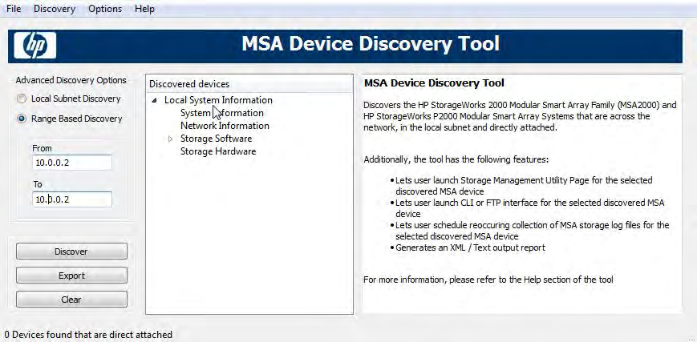
Рисунок Е.1 – Установка диапазона адресов
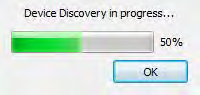
Рисунок Е.2 – Процесс поиска дискового устройства
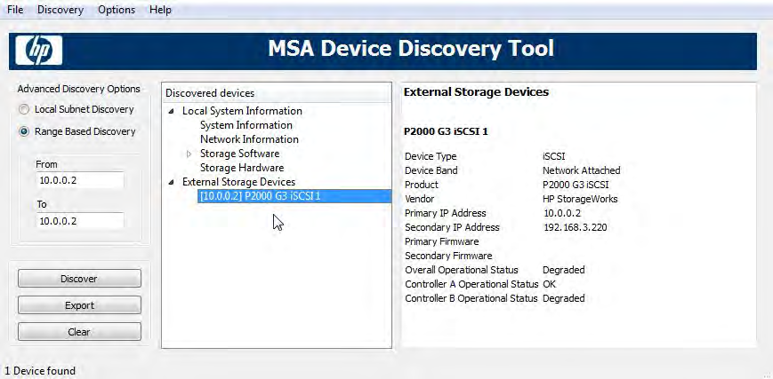
Рисунок Е.3 – Устройство найдено
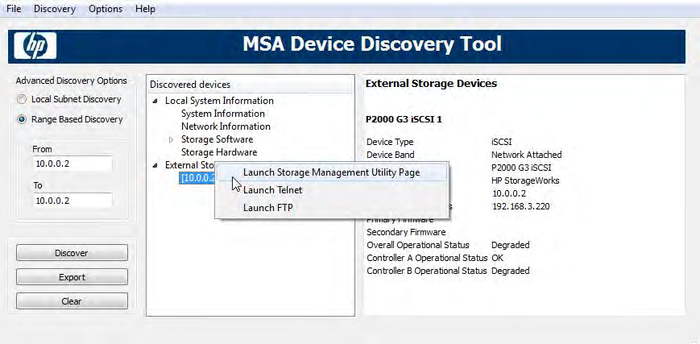
Рисунок Е.4 – Варианты подключения к найденному устройству
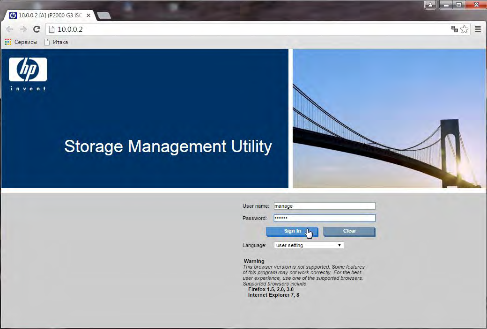
Рисунок Е.5 – Вход в утилиту управления устройством
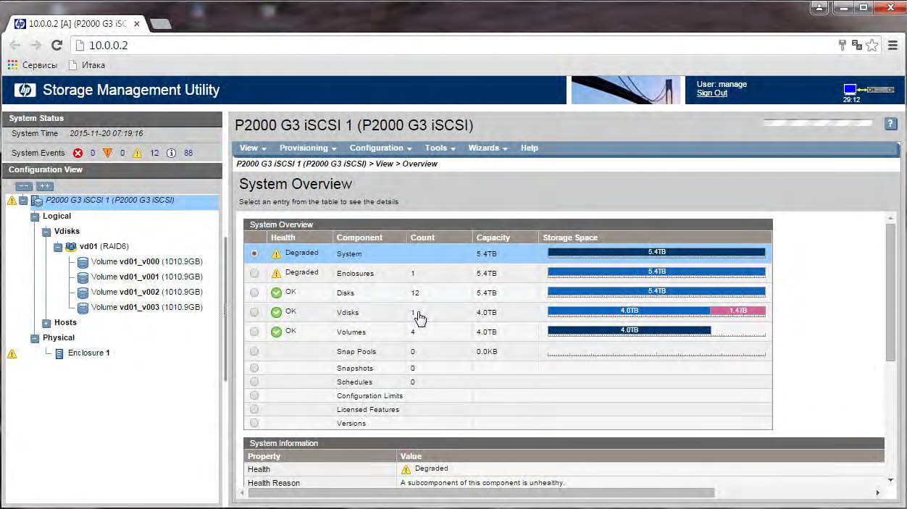
Рисунок Е.6 – Главное окно утилиты
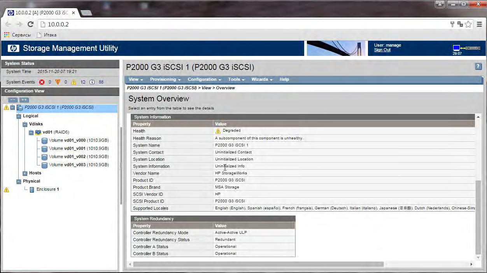 <Рисунок Е.7 – Информация о состоянии устройств>
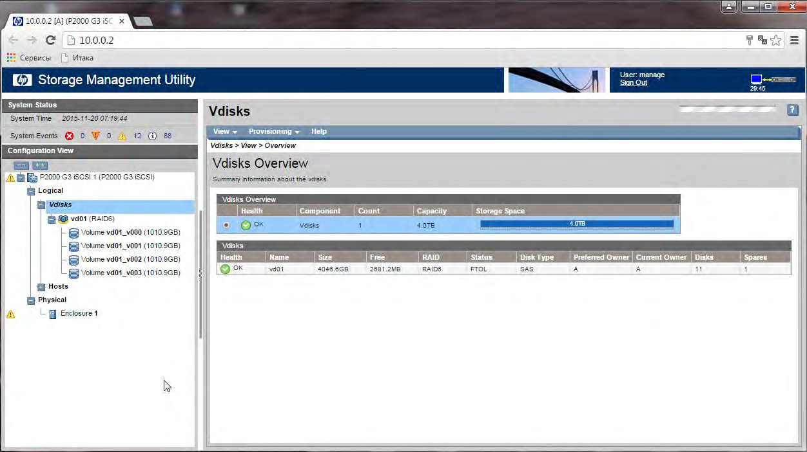
Рисунок Е.8 – Информация о выбранном томе
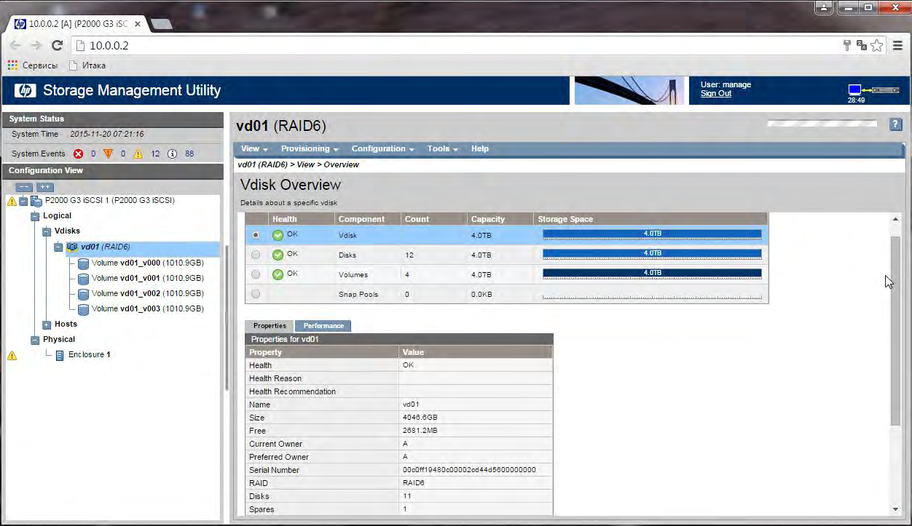
Рисунок Е.9 – Состояние тома
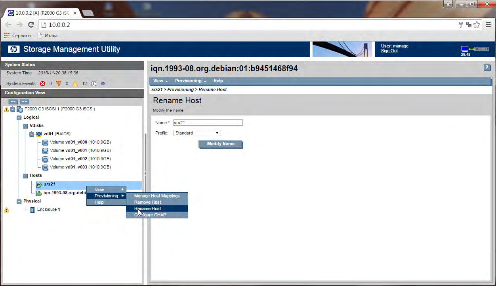
Рисунок Е.10 – Переименование подключенных узлов внешних пользователей
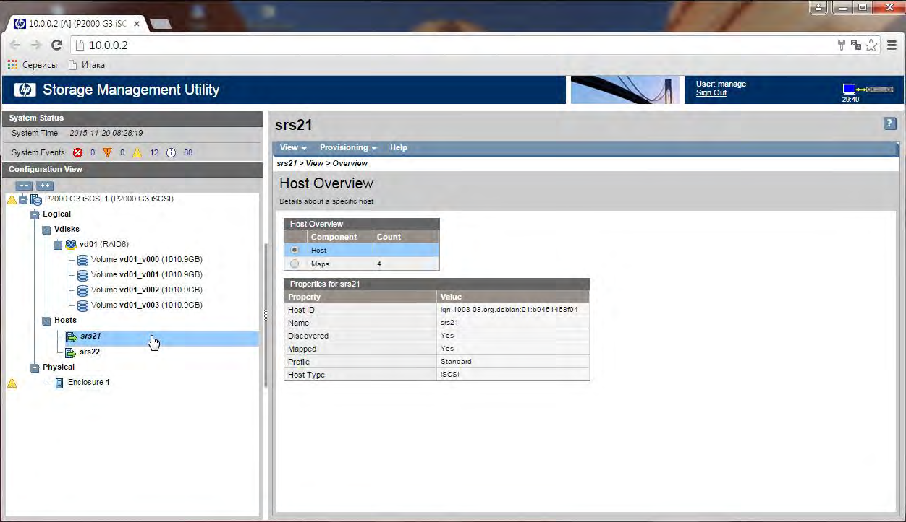
Рисунок Е.11 – Информация о подключенном узле